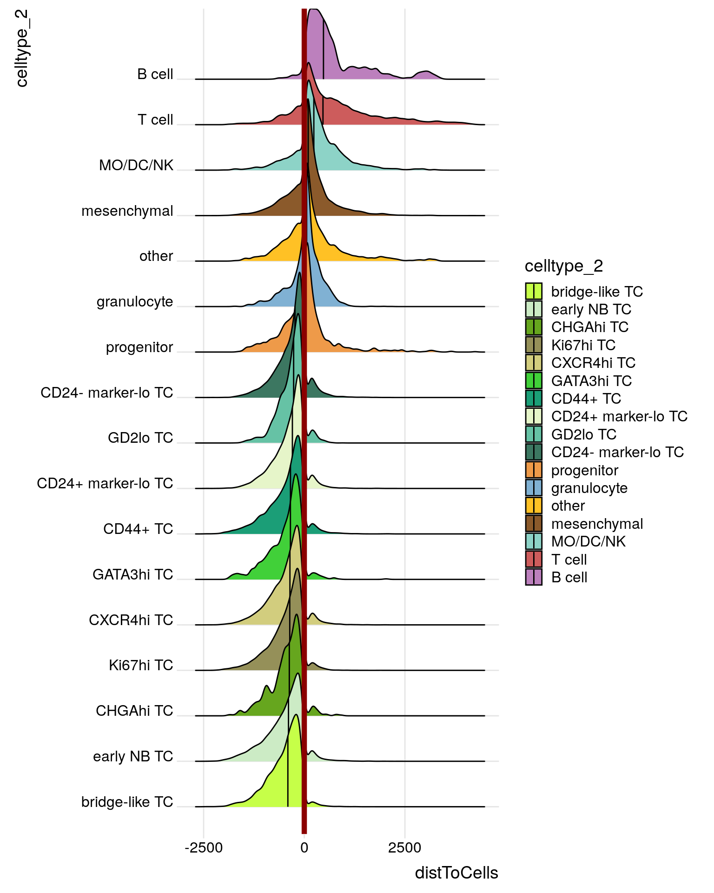

Spatial analysis in primary tumor samples
LazDaria
2024-05-31
Last updated: 2024-05-31
Checks: 7 0
Knit directory: MapMetSC/
This reproducible R Markdown analysis was created with workflowr (version 1.7.1). The Checks tab describes the reproducibility checks that were applied when the results were created. The Past versions tab lists the development history.
Great! Since the R Markdown file has been committed to the Git repository, you know the exact version of the code that produced these results.
Great job! The global environment was empty. Objects defined in the global environment can affect the analysis in your R Markdown file in unknown ways. For reproduciblity it’s best to always run the code in an empty environment.
The command set.seed(20240314) was run prior to running
the code in the R Markdown file. Setting a seed ensures that any results
that rely on randomness, e.g. subsampling or permutations, are
reproducible.
Great job! Recording the operating system, R version, and package versions is critical for reproducibility.
Nice! There were no cached chunks for this analysis, so you can be confident that you successfully produced the results during this run.
Great job! Using relative paths to the files within your workflowr project makes it easier to run your code on other machines.
Great! You are using Git for version control. Tracking code development and connecting the code version to the results is critical for reproducibility.
The results in this page were generated with repository version 7cb33c5. See the Past versions tab to see a history of the changes made to the R Markdown and HTML files.
Note that you need to be careful to ensure that all relevant files for
the analysis have been committed to Git prior to generating the results
(you can use wflow_publish or
wflow_git_commit). workflowr only checks the R Markdown
file, but you know if there are other scripts or data files that it
depends on. Below is the status of the Git repository when the results
were generated:
working directory clean
Note that any generated files, e.g. HTML, png, CSS, etc., are not included in this status report because it is ok for generated content to have uncommitted changes.
These are the previous versions of the repository in which changes were
made to the R Markdown (analysis/10_spatial_analysis.Rmd)
and HTML (docs/10_spatial_analysis.html) files. If you’ve
configured a remote Git repository (see ?wflow_git_remote),
click on the hyperlinks in the table below to view the files as they
were in that past version.
| File | Version | Author | Date | Message |
|---|---|---|---|---|
| Rmd | 7cb33c5 | lazdaria | 2024-05-31 | wflow_publish("analysis/10_spatial_analysis.Rmd") |
| html | d27375d | lazdaria | 2024-05-31 | Build site. |
| Rmd | 8853564 | lazdaria | 2024-05-31 | wflow_publish("analysis/10_spatial_analysis.Rmd") |
Spatial analysis in PT
Herein, we explore spatial interactions in the primary tumor.
Load libraries
Load libraries
library(imcRtools)Loading required package: SpatialExperimentLoading required package: SingleCellExperimentLoading required package: SummarizedExperimentLoading required package: MatrixGenericsLoading required package: matrixStats
Attaching package: 'MatrixGenerics'The following objects are masked from 'package:matrixStats':
colAlls, colAnyNAs, colAnys, colAvgsPerRowSet, colCollapse,
colCounts, colCummaxs, colCummins, colCumprods, colCumsums,
colDiffs, colIQRDiffs, colIQRs, colLogSumExps, colMadDiffs,
colMads, colMaxs, colMeans2, colMedians, colMins, colOrderStats,
colProds, colQuantiles, colRanges, colRanks, colSdDiffs, colSds,
colSums2, colTabulates, colVarDiffs, colVars, colWeightedMads,
colWeightedMeans, colWeightedMedians, colWeightedSds,
colWeightedVars, rowAlls, rowAnyNAs, rowAnys, rowAvgsPerColSet,
rowCollapse, rowCounts, rowCummaxs, rowCummins, rowCumprods,
rowCumsums, rowDiffs, rowIQRDiffs, rowIQRs, rowLogSumExps,
rowMadDiffs, rowMads, rowMaxs, rowMeans2, rowMedians, rowMins,
rowOrderStats, rowProds, rowQuantiles, rowRanges, rowRanks,
rowSdDiffs, rowSds, rowSums2, rowTabulates, rowVarDiffs, rowVars,
rowWeightedMads, rowWeightedMeans, rowWeightedMedians,
rowWeightedSds, rowWeightedVarsLoading required package: GenomicRangesLoading required package: stats4Loading required package: BiocGenerics
Attaching package: 'BiocGenerics'The following objects are masked from 'package:stats':
IQR, mad, sd, var, xtabsThe following objects are masked from 'package:base':
anyDuplicated, aperm, append, as.data.frame, basename, cbind,
colnames, dirname, do.call, duplicated, eval, evalq, Filter, Find,
get, grep, grepl, intersect, is.unsorted, lapply, Map, mapply,
match, mget, order, paste, pmax, pmax.int, pmin, pmin.int,
Position, rank, rbind, Reduce, rownames, sapply, setdiff, table,
tapply, union, unique, unsplit, which.max, which.minLoading required package: S4Vectors
Attaching package: 'S4Vectors'The following object is masked from 'package:utils':
findMatchesThe following objects are masked from 'package:base':
expand.grid, I, unnameLoading required package: IRangesLoading required package: GenomeInfoDbLoading required package: BiobaseWelcome to Bioconductor
Vignettes contain introductory material; view with
'browseVignettes()'. To cite Bioconductor, see
'citation("Biobase")', and for packages 'citation("pkgname")'.
Attaching package: 'Biobase'The following object is masked from 'package:MatrixGenerics':
rowMediansThe following objects are masked from 'package:matrixStats':
anyMissing, rowMedianslibrary(scales)
library(BiocParallel)
library(RColorBrewer)
library(circlize)========================================
circlize version 0.4.16
CRAN page: https://cran.r-project.org/package=circlize
Github page: https://github.com/jokergoo/circlize
Documentation: https://jokergoo.github.io/circlize_book/book/
If you use it in published research, please cite:
Gu, Z. circlize implements and enhances circular visualization
in R. Bioinformatics 2014.
This message can be suppressed by:
suppressPackageStartupMessages(library(circlize))
========================================library(patchwork)
library(ggplot2)
library(lisaClust)
library(tidyr)
Attaching package: 'tidyr'The following object is masked from 'package:S4Vectors':
expandlibrary(diffcyt)
library(dplyr)
Attaching package: 'dplyr'The following object is masked from 'package:Biobase':
combineThe following objects are masked from 'package:GenomicRanges':
intersect, setdiff, unionThe following object is masked from 'package:GenomeInfoDb':
intersectThe following objects are masked from 'package:IRanges':
collapse, desc, intersect, setdiff, slice, unionThe following objects are masked from 'package:S4Vectors':
first, intersect, rename, setdiff, setequal, unionThe following objects are masked from 'package:BiocGenerics':
combine, intersect, setdiff, unionThe following object is masked from 'package:matrixStats':
countThe following objects are masked from 'package:stats':
filter, lagThe following objects are masked from 'package:base':
intersect, setdiff, setequal, unionlibrary(CATALYST)
library(ComplexHeatmap)Loading required package: grid========================================
ComplexHeatmap version 2.19.0
Bioconductor page: http://bioconductor.org/packages/ComplexHeatmap/
Github page: https://github.com/jokergoo/ComplexHeatmap
Documentation: http://jokergoo.github.io/ComplexHeatmap-reference
If you use it in published research, please cite either one:
- Gu, Z. Complex Heatmap Visualization. iMeta 2022.
- Gu, Z. Complex heatmaps reveal patterns and correlations in multidimensional
genomic data. Bioinformatics 2016.
The new InteractiveComplexHeatmap package can directly export static
complex heatmaps into an interactive Shiny app with zero effort. Have a try!
This message can be suppressed by:
suppressPackageStartupMessages(library(ComplexHeatmap))
========================================library(gtools)
library(ggpubr)
library(gridExtra)
Attaching package: 'gridExtra'The following object is masked from 'package:dplyr':
combineThe following object is masked from 'package:Biobase':
combineThe following object is masked from 'package:BiocGenerics':
combinelibrary(ggridges)
library(forcats)
library(pheatmap)
Attaching package: 'pheatmap'The following object is masked from 'package:ComplexHeatmap':
pheatmaplibrary(tidyverse)── Attaching core tidyverse packages ──────────────────────── tidyverse 2.0.0 ──
✔ lubridate 1.9.3 ✔ stringr 1.5.1
✔ purrr 1.0.2 ✔ tibble 3.2.1
✔ readr 2.1.5 ── Conflicts ────────────────────────────────────────── tidyverse_conflicts() ──
✖ lubridate::%within%() masks IRanges::%within%()
✖ readr::col_factor() masks scales::col_factor()
✖ dplyr::collapse() masks IRanges::collapse()
✖ gridExtra::combine() masks dplyr::combine(), Biobase::combine(), BiocGenerics::combine()
✖ dplyr::count() masks matrixStats::count()
✖ dplyr::desc() masks IRanges::desc()
✖ purrr::discard() masks scales::discard()
✖ tidyr::expand() masks S4Vectors::expand()
✖ dplyr::filter() masks stats::filter()
✖ dplyr::first() masks S4Vectors::first()
✖ dplyr::lag() masks stats::lag()
✖ ggplot2::Position() masks BiocGenerics::Position(), base::Position()
✖ purrr::reduce() masks GenomicRanges::reduce(), IRanges::reduce()
✖ dplyr::rename() masks S4Vectors::rename()
✖ lubridate::second() masks S4Vectors::second()
✖ lubridate::second<-() masks S4Vectors::second<-()
✖ dplyr::slice() masks IRanges::slice()
ℹ Use the conflicted package (<http://conflicted.r-lib.org/>) to force all conflicts to become errorsRead data
First, we load the processed and phenotyped single-cell data from chapter 4. We perform spatial analysis only in the primary tumor samples, since the bone marrow samples are aspirates, where the spatial context is lost. Therefore, we first subset the SPE object to the PT samples and then load cell neighbors that were computed in MapMetIP. Therein, we have constructed a spatial graph by expanding individual high-resolution cell masks by 15 pixels. For the spatial interaction analysis, we will use the metaclusters for non-tumor cells, since these represent the minority in the PT samples, and the celltype level annotations for the tumor cells (majority).
spe <- readRDS(file.path(params$output,"spe_final.rds"))
spe <- spe[,spe$tissue=="PT"]
spe_neighbors <- read_steinbock(path=params$input, image_file=NULL, panel_file = NULL, intensities_folder = "intensities-0px-PT",regionprops_folder = NULL, graphs_folder="neighbors")
colnames(spe_neighbors) <- paste0(spe_neighbors$sample_id, "_", spe_neighbors$ObjectNumber)
colPair(spe, "neighborhood") <- colPair(spe_neighbors[,colnames(spe)], "neighborhood")
#celltype 2
spe$celltype_2 <- spe$metacluster
spe[,spe$metacluster=="tumor"]$celltype_2 <- spe[,spe$metacluster=="tumor"]$celltype
# generate new color vector
tumor_names <- unique(spe[,spe$metacluster=="tumor"]$celltype)
metadata(spe)$color_vectors$col_celltype_2 <- metadata(spe)$color_vectors$col_metacluster
metadata(spe)$color_vectors$col_celltype_2 <- c(metadata(spe)$color_vectors$col_celltype_2, metadata(spe)$color_vectors$col_celltype[tumor_names])
#celltype 3
spe$celltype_3 <- spe$metacluster
spe[,spe$metacluster=="T cell" | spe$metacluster=="B cell" | spe$metacluster=="granulocyte" | spe$metacluster=="MO/DC/NK"]$celltype_3 <- "immune"
# generate new color vector
metadata(spe)$color_vectors$col_celltype_3 <- metadata(spe)$color_vectors$col_metacluster
metadata(spe)$color_vectors$col_celltype_3 <- c(metadata(spe)$color_vectors$col_celltype_3, "immune" = "red")Interaction analysis
Next, we determine the interactions between cells on the celltype_2
level. For each image, the testInteractions function
computes the averaged cell type interactions and compares this number
against an empirical null distribution generated by permuting all cell
labels, while maintaining tissue structure. To save time, a previously
computed interaction matrix can be loaded from memory.
out <- readRDS(file.path(params$output,"testInteractions.rds"))
# out <- testInteractions(spe,
# group_by = "sample_id",
# label = "metacluster",
# colPairName = "neighborhood",
# BPPARAM = SerialParam(RNGseed = 221029))These interactions can be shown in a heatmap.
data <- out %>% as_tibble() %>%
group_by(from_label, to_label) %>%
summarize(sum_sigval = sum(sigval, na.rm = TRUE))`summarise()` has grouped output by 'from_label'. You can override using the
`.groups` argument.# Reshaping the data to a wide format suitable for heatmap
data_wide <- data %>%
pivot_wider(
names_from = to_label,
values_from = sum_sigval
)
data_wide <- tibble::column_to_rownames(data_wide, var = "from_label")
# Define maximum range value for symmetric color scale
#max_range <- max(abs(max(data_wide)), abs(min(data_wide)))
max_range <- max(abs(50), abs(50))
# Define breaks, making sure 0 is exactly in the middle
breaks <- seq(-max_range, max_range, length.out = 101) # From -30 to 30
# Create a color palette from blue (negative) to white (zero) to red (positive)
colors <- colorRampPalette(c("blue", "white", "red"))(length(breaks) - 1)
pheatmap(data_wide,
color = colors,
breaks = breaks,
cellwidth = 20,
cellheight = 20,
fontsize = 10,
display_numbers = TRUE) # Optionally display the values in cells
| Version | Author | Date |
|---|---|---|
| d27375d | lazdaria | 2024-05-31 |
Cellular neighborhoods
In a next step, we detect cellular neighborhoods (CNs). Cells are grouped into neighborhoods based on celltypes in their proximity. For each cell, the fraction of cells of a celltype among its neighbors, is detected. Based on these metrics, the cells can then be aggregated into neighborhoods. The number of neighborhoods has to be predefined.
spe <- aggregateNeighbors(spe,
colPairName = "neighborhood",
aggregate_by = "metadata",
count_by = "celltype_2")
set.seed(220705)
cn_1 <- kmeans(spe$aggregatedNeighbors, centers = 6)
spe$cn_celltypes_2 <- as.factor(cn_1$cluster)
plotSpatial(spe,
node_color_by = "cn_celltypes_2",
img_id = "sample_id",
ncols=6,
node_size_fix = 0.5) +
scale_color_brewer(palette = "Set3")
| Version | Author | Date |
|---|---|---|
| d27375d | lazdaria | 2024-05-31 |
Lastly, we can visualize the enrichment of cell types within cellular
neighborhoods using the regionMap function of the
lisaClust package.
regionMap(spe,
cellType = "celltype_2",
region = "cn_celltypes_2")
| Version | Author | Date |
|---|---|---|
| d27375d | lazdaria | 2024-05-31 |
Differential abundance of CNs
Finally, we will generate a barplot showing the proportions of CNs per sample. To be able to use the diffcyt package, we will first transform the SPE object into a catalyst-compatible object.
sce <- SingleCellExperiment(assays=list(counts=assay(spe, "counts"), exprs=assay(spe, "counts")))
#recode metadata on progression
sce$progress <- factor(spe$progression)
progress <- recode(sce$progress, `0` = 'NoProg', `1` = 'Prog')
sce$progress <- as.factor(progress)
#recode metadata on MYCN amplification
sce$mna <- factor(spe$MYCN_amp)
mna <- recode(sce$mna, `1` = 'MNA', `2` = 'het', `0` = 'nMNA', `9` = 'unknown')
sce$mna <- as.factor(mna)
sce$patient <- factor(spe$study_id)
sce$fm_id <- spe$fm_id
sce$sample_id <- factor(paste0(sce$progress, "_", sce$mna, "_", sce$patient, "_", sce$fm_id))
sce$cluster_id <- factor(spe$cn_celltypes_2)
sce$metacluster <- factor(spe$metacluster)
sce$condition <- 'na'
# Add celltype information to metadata
metadata(sce)$cluster_codes <- data.frame(celltype = factor(spe$cn_celltypes_2))Next, we will generate a barplot showing the proportion of cells assigned to each of the 6 CNs per sample.
set.seed(20231103)
p <- plotAbundances(sce, k = "celltype", by = "sample", col_clust=T, k_pal=brewer.pal(6, "Set3"),
linkage="ward.D", distance="manhattan")
p
| Version | Author | Date |
|---|---|---|
| d27375d | lazdaria | 2024-05-31 |
We generate a dendogram for the hierarchical clustering of barplots.
#Dendogram
set.seed(20231103)
wide_df <- p$data %>%
select(-condition) %>%
pivot_wider(names_from = cluster_id, values_from = Freq)
wide_df <- data.frame(wide_df)
rownames(wide_df) <- wide_df$sample_id
wide_df <- wide_df %>% select(-sample_id)
dist_matrix <- dist(wide_df, method = "manhattan")
hc <- hclust(dist_matrix, method = "ward.D")
plot(hc)
| Version | Author | Date |
|---|---|---|
| d27375d | lazdaria | 2024-05-31 |
In addition, we plot the metadata of these samples in the respective order.
clustered_samples <- levels(p$data$sample_id)
sce$sample_id <- factor(sce$sample_id, levels=clustered_samples)
#access sample-level data
sample_summary <- as.data.frame(colData(sce)) %>%
group_by(sample_id) %>%
summarize(mna = first(mna),
progress=first(progress),
)
sample_summary <- as.data.frame(sample_summary)
rownames(sample_summary) <- sample_summary$sample_id
sample_summary <- sample_summary %>% select(-sample_id)
#assign color codes
col_code <- c("MNA"=rgb(202,0,32, maxColorValue = 255),
"het"=rgb(146,197,222, maxColorValue = 255),
"nMNA"=rgb(5,113,176, maxColorValue = 255),
"unknown"="white",
"Prog"=rgb(202,0,32, maxColorValue = 255),
"NoProg"=rgb(5,113,176, maxColorValue = 255)
)
# Plot metadata
columnAnnotation(MYCN_amp=sample_summary$mna, col=list(MYCN_amp=col_code)) %v%
columnAnnotation(progression=sample_summary$progress, col=list(progression=col_code))
| Version | Author | Date |
|---|---|---|
| d27375d | lazdaria | 2024-05-31 |
We then compare the abundance of cellular communities between nMNA
and MNA samples. Therefore, we first prepare data for DA analysis using
the diffcyt package.
keep_rows <- rowData(spe)$use_channel
keep_cols <- spe$MYCN_amp==0 | spe$MYCN_amp==1
sce <- SingleCellExperiment(assays=list(counts=assay(spe[keep_rows,keep_cols], "counts"), exprs=assay(spe[keep_rows,keep_cols], "counts")))
#recode metadata on progression
sce$progress <- factor(spe[keep_rows,keep_cols]$progression)
progress <- recode(sce$progress, `0` = 'NoProg', `1` = 'Prog')
sce$progress <- as.factor(progress)
#recode metadata on MYCN amplification
sce$mna <- factor(spe[keep_rows,keep_cols]$MYCN_amp)
mna <- recode(sce$mna, `1` = 'MNA', `2` = 'het', `0` = 'nMNA', `9` = 'unknown')
sce$mna <- as.factor(mna)
sce$patient <- factor(spe[keep_rows,keep_cols]$study_id)
sce$fm_id <- spe[keep_rows,keep_cols]$fm_id
sce$sample_id <- factor(paste0(sce$progress, "_", sce$mna, "_", sce$patient, "_", sce$fm_id))
sce$cluster_id <- factor(spe[keep_rows,keep_cols]$cn_celltypes_2)
sce$metacluster <- factor(spe[keep_rows,keep_cols]$metacluster)
sce$condition <- sce$mna
# Add experiment_info
metadata(sce)$experiment_info <- as.data.frame(colData(sce)) %>% group_by(sample_id,patient, mna, condition, progress) %>%
summarise(n_cells=n(),.groups = 'drop') %>%
as.data.frame()
# Add celltype information to metadata
metadata(sce)$cluster_codes <- data.frame(celltype = factor(spe[keep_rows,keep_cols]$cn_celltypes_2))
# Define cell type and state markers
type_markers <- c("MPO_Y89_mean", "CD44_In115_mean", "CD11b_Nd142_mean", "HLA-DR_Nd143_mean", "PRPH_Nd144_mean", "HLA-ABC_Sm147_mean", "CD20_Nd148_mean", "LUM_Sm149_mean", "CD11c_Nd150_mean",
"CD24_Eu151_mean", "CD3_Sm152_mean", "CD45_Eu153_mean", "CD8a_Sm154_mean", "GD2_Gd155_mean", "CD34_Gd156_mean", "CD10_Gd158_mean", "CXCR4_Tb159_mean","SOX10_Dy162_mean",
"FOXP3_Dy163_mean", "CHGA_Dy164_mean", "GATA3_Er168_mean", "CD56_Er170_mean", "CD4_Yb171_mean", "ELAVL4_Yb174_mean", "CD14_Lu175_mean", "Vimentin_Pt196_mean", "CD15_Bi209_mean")
state_markers <- c("CD274_Gd160_mean", "S100B_Dy161_mean", "CD279_Ho165_mean", "Ki-67_Tm169_mean", "GZMB_Yb173_mean")#list of samples as input to diffcyt methods
df_list <- lapply(unique(sce$sample_id), function(x){as.data.frame(t(counts(sce[,sce$sample_id==x])))})
names(df_list) <- unique(sce$sample_id)
#experiment info
experiment_info <- metadata(sce)$experiment_info
experiment_info <- experiment_info[match(names(df_list),experiment_info$sample_id),]
#marker info
channel_name <- sapply(strsplit(rownames(rowData(spe[keep_rows,])), "_"), "[[", 2)
marker_name <- sapply(strsplit(rownames(rowData(spe[keep_rows,])), "_"), "[[", 1)
marker_class <-ifelse(rownames(spe[keep_rows,]) %in% type_markers, "type",
ifelse(rownames(spe[keep_rows,]) %in% state_markers, "state",
"other"))
row_data <- data.frame(cbind(channel_name, marker_name), row.names=marker_name)
row_data$marker_class <- as.factor(marker_class)
marker_info <- row_data
#prepare data into format for diffcyt pipeline
d_se <- prepareData(df_list, experiment_info, marker_info)
rowData(d_se)$cluster_id <- sce[,rownames(d_se)]$cluster_id
metadata(d_se)$cluster_codes <- metadata(sce)$cluster_codes
# Transform data
d_se <- transformData(d_se)
# Calculate counts
d_counts <- calcCounts(d_se)Subsequently, we perform the DA analysis comparing celltype proportions between to genetic subgroups.
# Create design matrix
design <- createDesignMatrix(experiment_info, cols_design = "condition")
# Create contrast matrix
contrast <- createContrast(c(0, 1))
nrow(contrast) == ncol(design)[1] TRUE# Test for differential abundance (DA) of clusters
res_DA <- testDA_voom(d_counts,design, contrast
)
FDR_cutoff = 0.1
rowData(res_DA)[rowData(res_DA)$p_adj<FDR_cutoff,]DataFrame with 4 rows and 7 columns
cluster_id logFC AveExpr t p_val p_adj B
<factor> <numeric> <numeric> <numeric> <numeric> <numeric> <numeric>
2 2 2.06248 17.1685 2.25828 2.89285e-02 6.55473e-02 -3.84558
3 3 -1.39763 16.6829 -1.97151 5.49627e-02 8.24441e-02 -4.41164
5 5 -2.84090 12.9985 -2.20424 3.27737e-02 6.55473e-02 -3.61294
6 6 -5.34792 14.8359 -5.17667 5.34551e-06 3.20731e-05 3.90366res<- data.frame(rowData(res_DA))Finally, we visualize DA results in boxplots and barplots showing the logFC
p <- plotAbundances(sce, k = "celltype", by = "sample")
comparisons <- c("nMNAvsMNA")
plot_list_fc <- list()
for(i in 1:length(unique(p$data$cluster_id))){
cluster_name <- unique(p$data$cluster_id)[i]
proportions <- data.frame(p$data[p$data$cluster_id == cluster_name, c("sample_id", "condition", "Freq")])
p_adj <- c()
group1 <- c()
group2 <- c()
logFC <- c()
for(j in 1:1){
stats <- res
p_adj <- c(p_adj, round(stats[rownames(stats)==droplevels(cluster_name), "p_adj"],3))
logFC <- c(logFC, -1*round(stats[rownames(stats)==droplevels(cluster_name), "logFC"],2))
group1 <- c(group1, unlist(strsplit(comparisons[j], "vs"))[1])
group2 <- c(group2, unlist(strsplit(comparisons[j], "vs"))[2])
}
stats_df <- data.frame(p_adj=p_adj, group1=group1, group2=group2, logFC=logFC)
stats_df$p_adj_signif <- stars.pval(stats_df$p_adj)
stats_df$p_adj_signif[stats_df$p_adj_signif==" "] <- "ns"
stats_df$p_fc <- paste0(stats_df$logFC, " (", stats_df$p_adj, ")", " (", stats_df$p_adj_signif, ")")
color <- brewer.pal(6, "Set3")[cluster_name]
plot_list_fc[[i]] <- ggboxplot(proportions, x = "condition", y = "Freq", order=c("nMNA", "MNA"),
color = "condition", palette =c(color, color),
add.params = list(size = 1.5),
add = "jitter",
title=cluster_name, show.legend = F) +
stat_pvalue_manual(
stats_df,
y.position = max(proportions$Freq),
step.increase = 0.4,
label = "p_fc"
) +
theme(aspect.ratio = 1.5, legend.position="none") +
scale_y_continuous(expand = expansion(mult = c(0.05, 0.15)))
}
grid.arrange(grobs = plot_list_fc, ncol = 6)
| Version | Author | Date |
|---|---|---|
| d27375d | lazdaria | 2024-05-31 |
and in dodge barplots.
df <- res[, c("logFC", "p_adj")]
df$p_adj_signif <- stars.pval(df$p_adj)
df$p_adj_signif[df$p_adj_signif==" "] <- "ns"
df$cluster <- rownames(df)
p <- ggplot(df, aes(fill=cluster, y=logFC, x=cluster)) +
ggtitle("DA - CNs") +
geom_bar(
stat="identity",
position="dodge",
show.legend = F) +
scale_fill_manual(values = brewer.pal(6, "Set3")) +
theme(axis.text.x = element_text(angle = 90, vjust = 0.5, hjust=1)) +
geom_text(aes(label = p_adj_signif), vjust = 0)
p
| Version | Author | Date |
|---|---|---|
| d27375d | lazdaria | 2024-05-31 |
Patch detection
Subsequently, we detect tumor patches. We first detect connected sets of tumor cells with a predefined min. number of cells making up a patch and then we expand the concave hull around the patch by 1 pixel.
spe <- patchDetection(spe,
patch_cells = spe$metacluster == "tumor",
img_id = "sample_id",
min_patch_size=20,
expand_by=1,
colPairName = "neighborhood")The returned object is ordered by the 'sample_id' entry.We can now plot the tumor patch in the neighborhood graph of individual samples.
plotSpatial(spe[,spe$sample_id == "20220926_20220809_16-006_TU_003"],
node_color_by = "GD2_Gd155_mean",
assay_type = "counts",
img_id = "sample_id",
draw_edges = TRUE,
colPairName = "neighborhood",
nodes_first = FALSE,
node_size_by = "area",
directed = FALSE,
edge_color_fix = "grey") +
scale_size_continuous(range = c(0.1, 2)) +
ggtitle("GD2")
| Version | Author | Date |
|---|---|---|
| d27375d | lazdaria | 2024-05-31 |
plotSpatial(spe[,spe$sample_id == "20220926_20220809_16-006_TU_003"],
node_color_by = "patch_id",
img_id = "sample_id",
node_size_fix = 0.5) +
theme(legend.position = "none")
| Version | Author | Date |
|---|---|---|
| d27375d | lazdaria | 2024-05-31 |
Then we determine the frequency of cells within the patch belonging to a metacluster per sample with respect to progression status of the respective patient.
variable <- "progression"
plot_list <- list()
celltypes <- unique(spe$metacluster)
for(i in 1:length(unique(celltypes))){
c <- celltypes[i]
cell_freq_per_patch <- colData(spe) %>% as_tibble() %>%
group_by(patch_id, sample) %>%
summarize(cell_count = sum(metacluster == c),
patch_size = n(),
cell_freq = cell_count / patch_size) %>%
filter(!is.na(patch_id))
mean_cell_freq_per_sample <- cell_freq_per_patch %>%
group_by(sample) %>%
summarise(mean_cell_freq = mean(cell_freq, na.rm = TRUE))%>%
arrange(desc(mean_cell_freq))
df <- data.frame(
sample = spe$sample,
condition = colData(spe)[,variable]
)
progression_per_sample <- df %>%
group_by(sample) %>%
summarise(condition = first(condition))
combined_data <- mean_cell_freq_per_sample %>%
left_join(progression_per_sample, by = "sample")
# Calculate log2FC
log2fc_df <- combined_data %>%
group_by(condition) %>%
summarise(mean_freq = mean(mean_cell_freq, na.rm = TRUE)) %>%
spread(condition, mean_freq) %>%
mutate(log2FC = log2(`1` / `0`))
stats_df <- compare_means(mean_cell_freq ~ condition,
method = "wilcox.test",
data = combined_data)
stats_df$p_adj_signif <- stars.pval(stats_df$p.adj)
stats_df$p_adj_signif[stats_df$p_adj_signif==" "] <- "ns"
stats_df$p_long <- paste0("log2FC: ", round(log2fc_df$log2FC, 2),
" (", stats_df$p.adj, " ", stats_df$p_adj_signif, ")")
color <- unname(metadata(spe)$color_vectors$col_metacluster[as.character(c)])
plot_list[[c]] <- ggboxplot(combined_data, x = "condition", y = "mean_cell_freq",
color = "condition", palette =c(color, color),
add.params = list(size = 3),
add = "jitter",
title=c) +
stat_pvalue_manual(stats_df, label = "p_long", y.position = max(combined_data$mean_cell_freq), step.increase = 0.4,) +
theme(aspect.ratio = 1.6, legend.position="none") +
scale_y_continuous(expand = expansion(mult = c(0.05, 0.15)))
}`summarise()` has grouped output by 'patch_id'. You can override using the
`.groups` argument.
`summarise()` has grouped output by 'patch_id'. You can override using the
`.groups` argument.
`summarise()` has grouped output by 'patch_id'. You can override using the
`.groups` argument.
`summarise()` has grouped output by 'patch_id'. You can override using the
`.groups` argument.
`summarise()` has grouped output by 'patch_id'. You can override using the
`.groups` argument.
`summarise()` has grouped output by 'patch_id'. You can override using the
`.groups` argument.
`summarise()` has grouped output by 'patch_id'. You can override using the
`.groups` argument.
`summarise()` has grouped output by 'patch_id'. You can override using the
`.groups` argument.grid.arrange(grobs = plot_list, ncol = 6)
| Version | Author | Date |
|---|---|---|
| d27375d | lazdaria | 2024-05-31 |
We repeat the same for immune cells overall.
variable <- "progression"
c <- "immune"
cell_freq_per_patch <- colData(spe) %>% as_tibble() %>%
group_by(patch_id, sample) %>%
summarize(cell_count = sum(celltype_3 == c),
patch_size = n(),
cell_freq = cell_count / patch_size) %>%
filter(!is.na(patch_id)) `summarise()` has grouped output by 'patch_id'. You can override using the
`.groups` argument.mean_cell_freq_per_sample <- cell_freq_per_patch %>%
group_by(sample) %>%
summarise(mean_cell_freq = mean(cell_freq, na.rm = TRUE))%>%
arrange(desc(mean_cell_freq))
df <- data.frame(
sample = spe$sample,
condition = colData(spe)[,variable]
)
progression_per_sample <- df %>%
group_by(sample) %>%
summarise(condition = first(condition))
combined_data <- mean_cell_freq_per_sample %>%
left_join(progression_per_sample, by = "sample")
# Calculate log2FC
log2fc_df <- combined_data %>%
group_by(condition) %>%
summarise(mean_freq = mean(mean_cell_freq, na.rm = TRUE)) %>%
spread(condition, mean_freq) %>%
mutate(log2FC = log2(`1` / `0`))
stats_df <- compare_means(mean_cell_freq ~ condition,
method = "wilcox.test",
data = combined_data)
stats_df$p_adj_signif <- stars.pval(stats_df$p.adj)
stats_df$p_adj_signif[stats_df$p_adj_signif==" "] <- "ns"
stats_df$p_long <- paste0("log2FC: ", round(log2fc_df$log2FC, 2),
" (", stats_df$p.adj, " ", stats_df$p_adj_signif, ")")
color <- unname(metadata(spe)$color_vectors$col_celltype_3[as.character(c)])
p <- ggboxplot(combined_data, x = "condition", y = "mean_cell_freq",
color = "condition", palette =c(color, color),
add.params = list(size = 3),
add = "jitter",
title=c) +
stat_pvalue_manual(stats_df, label = "p_long", y.position = max(combined_data$mean_cell_freq), step.increase = 0.4,) +
theme(aspect.ratio = 1.6, legend.position="none") +
scale_y_continuous(expand = expansion(mult = c(0.05, 0.15)))
p
| Version | Author | Date |
|---|---|---|
| d27375d | lazdaria | 2024-05-31 |
Distance to tumor-stroma border
Based on detected patches, the distance to the tumor stroma border can be computed. Therefore the minDistToCells can be used. Negative values indicate cells within patches and positive values cells outside of patches.
spe <- minDistToCells(spe,
x_cells = !is.na(spe$patch_id),
img_id = "sample_id")The returned object is ordered by the 'sample_id' entry.plotSpatial(spe[,spe$sample_id == "20220926_20220809_16-006_TU_003"],
node_color_by = "distToCells",
img_id = "sample_id",
node_size_fix = 0.5) +
scale_color_gradient2(low = "dark blue", mid = "white", high = "dark red")
| Version | Author | Date |
|---|---|---|
| d27375d | lazdaria | 2024-05-31 |
The distance distribution per celltype can be shown in ridge plots.
ggplot(as.data.frame(colData(spe)) %>%
mutate(celltype_2 = fct_reorder(celltype_2, distToCells, .fun = median))) +
stat_density_ridges(aes(distToCells, celltype_2, fill = celltype_2),
quantiles = c(0.5), quantile_lines = TRUE, scale = 3) +
geom_vline(xintercept = 0, color = "dark red", linewidth = 2) +
scale_fill_manual(values = metadata(spe)$color_vectors$col_celltype_2) +
theme_ridges()Picking joint bandwidth of 58.9
| Version | Author | Date |
|---|---|---|
| d27375d | lazdaria | 2024-05-31 |
Based on the calculated distance for each cell, three compartments -
tumor core, tumor/stroma border and stroma - can be defined using a
distance threshold. Image 20221018_20220906_03-018_TU_001
lacks patches, therefore all cells are defined as stroma
for this image.
threshold <- 100
spe$compartment <- "stroma"
spe[, abs(spe$distToCells) <= threshold & spe$sample_id != "20221018_20220906_03-018_TU_001"]$compartment <- "border"
spe[,spe$compartment != "border" & spe$distToCells<0 & spe$sample_id != "20221018_20220906_03-018_TU_001"]$compartment <- "core"DA analysis in spatial compartments
Next, we will plot the differential abundance of metaclusters with
respect to spatial compartment on a sample level. Let’s again convert
the SPE object into a catalyst-compatible object. Decide whether you
want to compare tumor celltypes or immune
metaclusters by setting the variable cells. Furthermore,
select which compartments to compare, by setting compare to
core-border, core-stroma or
border-stroma.
cells <- "immune"
compare <- "core-border"
if (cells =="immune"){
order <- c("T cell", "B cell", "MO/DC/NK", "granulocyte")
keep_cols <- spe$metacluster=="T cell" | spe$metacluster=="B cell" | spe$metacluster=="MO/DC/NK" | spe$metacluster=="granulocyte"
color <- metadata(spe)$color_vectors$col_celltype_2
}else{
order <- c("early SYM-like TC","CD24+ marker-lo TC", "CD24- marker-lo TC", "GD2lo TC", "Ki67hi TC", "CHGAhi TC", "CXCR4hi TC", "GATA3hi TC", "bridge-like TC", "CD44+ mes-like TC")
keep_cols <- spe$metacluster=="tumor"
color <- metadata(spe)$color_vectors$col_celltype_2
}
keep_cols <- keep_cols & (spe$compartment == strsplit(compare, "-")[[1]][1] | spe$compartment == strsplit(compare, "-")[[1]][2])
keep_rows <- rowData(spe)$use_channel
sce <- SingleCellExperiment(assays=list(counts=assay(spe, "counts")[keep_rows,keep_cols], exprs=assay(spe, "counts")[keep_rows,keep_cols]))
sce$fm_id <- spe[keep_rows,keep_cols]$fm_id
sce$compartment <- factor(spe[keep_rows,keep_cols]$compartment)
#split samples into individual compartments
sce$sample_id <- factor(paste0(sce$fm_id, "_", sce$compartment))
sce$sample <- factor(spe[keep_rows,keep_cols]$sample)
sce$condition <- sce$compartment
sce$cluster_id <- factor(spe[keep_rows,keep_cols]$celltype_2, levels=order)
sce$metacluster <- factor(spe[keep_rows,keep_cols]$metacluster)
metadata(sce)$cluster_codes <- data.frame(celltype = factor(spe[keep_rows,keep_cols]$celltype_2, levels=order))
# Add metadata
metadata(sce)$experiment_info <- as.data.frame(colData(sce)) %>% group_by(sample_id, condition, sample) %>%
summarise(n_cells=n(),.groups = 'drop') %>%
as.data.frame()
# Define cell_type_markers
type_markers <- c("MPO_Y89_mean", "CD44_In115_mean", "CD11b_Nd142_mean", "HLA-DR_Nd143_mean", "PRPH_Nd144_mean", "HLA-ABC_Sm147_mean", "CD20_Nd148_mean", "LUM_Sm149_mean", "CD11c_Nd150_mean",
"CD24_Eu151_mean", "CD3_Sm152_mean", "CD45_Eu153_mean", "CD8a_Sm154_mean", "GD2_Gd155_mean", "CD34_Gd156_mean", "CD10_Gd158_mean", "CXCR4_Tb159_mean","SOX10_Dy162_mean",
"FOXP3_Dy163_mean", "CHGA_Dy164_mean", "GATA3_Er168_mean", "CD56_Er170_mean", "CD4_Yb171_mean", "ELAVL4_Yb174_mean", "CD14_Lu175_mean", "Vimentin_Pt196_mean", "CD15_Bi209_mean")
# Define cell_state_markers
state_markers <- c("CD274_Gd160_mean", "S100B_Dy161_mean", "CD279_Ho165_mean", "Ki-67_Tm169_mean", "GZMB_Yb173_mean")
# Add to sce
rowData(sce)$marker_class <- ifelse(rownames(sce) %in% type_markers, "type",
ifelse(rownames(sce) %in% state_markers, "state",
"other"))
plotAbundances(sce, k = "celltype", by = "sample", k_pal=color)
| Version | Author | Date |
|---|---|---|
| d27375d | lazdaria | 2024-05-31 |
We first prepare data for DA analysis using the diffcyt
package.
#list of samples as input to diffcyt methods
df_list <- lapply(unique(sce$sample_id), function(x){as.data.frame(t(counts(sce[,sce$sample_id==x])))})
names(df_list) <- unique(sce$sample_id)
#experiment info
experiment_info <- metadata(sce)$experiment_info
experiment_info <- experiment_info[match(names(df_list),experiment_info$sample_id),]
#marker info
channel_name <- sapply(strsplit(rownames(rowData(spe)[keep_rows,]), "_"), "[[", 2)
marker_name <- sapply(strsplit(rownames(rowData(spe)[keep_rows,]), "_"), "[[", 1)
marker_class <-ifelse(rownames(spe)[keep_rows] %in% type_markers, "type",
ifelse(rownames(spe)[keep_rows] %in% state_markers, "state",
"other"))
row_data <- data.frame(cbind(channel_name, marker_name), row.names=marker_name)
row_data$marker_class <- as.factor(marker_class)
marker_info <- row_data
#prepare data into format for diffcyt pipeline
d_se <- prepareData(df_list, experiment_info, marker_info)
rowData(d_se)$cluster_id <- sce[,rownames(d_se)]$cluster_id
metadata(d_se)$cluster_codes <- metadata(sce)$cluster_codes
# Transform data
d_se <- transformData(d_se)
# Calculate counts
d_counts <- calcCounts(d_se)Subsequently, we perform the DA analysis comparing immune celltype/metacluster proportions between paired compartments, i.e. from the same sample.
design <- createDesignMatrix(experiment_info, cols_design = c("condition", "sample"))
contrast <- createContrast(c(0, 1, rep(0, length(unique(experiment_info$sample))-1))) #paired
nrow(contrast) == ncol(design)[1] TRUE# Test for differential abundance (DA) of clusters
res_DA <- testDA_edgeR(d_counts,design, contrast,
min_cells=3,
min_samples=round(dim(d_counts)[2]*0.2)
)
FDR_cutoff = 0.1
rowData(res_DA)[rowData(res_DA)$p_adj<FDR_cutoff,]DataFrame with 2 rows and 6 columns
cluster_id logFC logCPM LR p_val p_adj
<factor> <numeric> <numeric> <numeric> <numeric> <numeric>
B cell B cell -1.083921 15.3721 13.47390 0.000241905 0.000967622
MO/DC/NK MO/DC/NK -0.288246 18.2538 4.35369 0.036928897 0.073857793res<- data.frame(rowData(res_DA))Finally, we visualize DA results in boxplots.
p <- plotAbundances(sce, k = "celltype", by = "sample")
comparisons <- c(paste0(strsplit(compare, "-")[[1]][1], "vs", strsplit(compare, "-")[[1]][2]))
ord <- c(strsplit(compare, "-")[[1]][1], strsplit(compare, "-")[[1]][2])
plot_list_fc <- list()
for(i in 1:length(unique(p$data$cluster_id))){
cluster_name <- unique(p$data$cluster_id)[i]
proportions <- data.frame(p$data[p$data$cluster_id == cluster_name, c("sample_id", "condition", "Freq")])
p_adj <- c()
group1 <- c()
group2 <- c()
logFC <- c()
for(j in 1:1){
stats <- res
p_adj <- c(p_adj, round(stats[rownames(stats)==droplevels(cluster_name), "p_adj"],3))
logFC <- c(logFC, round(stats[rownames(stats)==droplevels(cluster_name), "logFC"],2))
group1 <- c(group1, unlist(strsplit(comparisons[j], "vs"))[1])
group2 <- c(group2, unlist(strsplit(comparisons[j], "vs"))[2])
}
stats_df <- data.frame(p_adj=p_adj, group1=group1, group2=group2, logFC=logFC)
stats_df$p_adj_signif <- stars.pval(stats_df$p_adj)
stats_df$p_adj_signif[stats_df$p_adj_signif==" "] <- "ns"
stats_df$p_fc <- paste0(stats_df$logFC, " (", stats_df$p_adj, ")", " (", stats_df$p_adj_signif, ")")
color <- unname(metadata(spe)$color_vectors$col_celltype_2[as.character(cluster_name)])
plot_list_fc[[i]] <- ggboxplot(proportions, x = "condition", y = "Freq", order=ord,
color = "condition", palette =c(color, color),
add.params = list(size = 1.5),
add = "jitter",
title=cluster_name, show.legend = F) +
stat_pvalue_manual(
stats_df,
y.position = max(proportions$Freq),
step.increase = 0.4,
label = "p_fc"
) +
theme(aspect.ratio = 1.5, legend.position="none") +
scale_y_continuous(expand = expansion(mult = c(0.05, 0.15)))
}
grid.arrange(grobs = plot_list_fc, ncol = 6)
| Version | Author | Date |
|---|---|---|
| d27375d | lazdaria | 2024-05-31 |
We will plot the logFC for the comparisons between conditions in a barplot.
df <- res[, c("logFC", "p_adj")]
df$p_adj_signif <- stars.pval(df$p_adj)
df$p_adj_signif[df$p_adj_signif==" "] <- "ns"
df$cluster <- rownames(df)
p <- ggplot(df, aes(fill=cluster, y=logFC, x=cluster)) +
ggtitle(colnames(contrasts)[i]) +
geom_bar(
stat="identity",
position="dodge",
show.legend = F) +
scale_fill_manual(values = metadata(spe)$color_vectors$col_celltype_2) +
theme(axis.text.x = element_text(angle = 90, vjust = 0.5, hjust=1)) +
geom_text(aes(label = p_adj_signif), vjust = 0)
p
| Version | Author | Date |
|---|---|---|
| d27375d | lazdaria | 2024-05-31 |
Save R object
Finally, we save the R object.
saveRDS(spe, file.path(params$output,"spe_spatial.RDS"))Session Info
SessionInfo
R version 4.4.0 (2024-04-24)
Platform: x86_64-pc-linux-gnu
Running under: Ubuntu 22.04.4 LTS
Matrix products: default
BLAS: /usr/lib/x86_64-linux-gnu/openblas-pthread/libblas.so.3
LAPACK: /usr/lib/x86_64-linux-gnu/openblas-pthread/libopenblasp-r0.3.20.so; LAPACK version 3.10.0
locale:
[1] LC_CTYPE=en_US.UTF-8 LC_NUMERIC=C
[3] LC_TIME=en_US.UTF-8 LC_COLLATE=en_US.UTF-8
[5] LC_MONETARY=en_US.UTF-8 LC_MESSAGES=en_US.UTF-8
[7] LC_PAPER=en_US.UTF-8 LC_NAME=C
[9] LC_ADDRESS=C LC_TELEPHONE=C
[11] LC_MEASUREMENT=en_US.UTF-8 LC_IDENTIFICATION=C
time zone: Etc/UTC
tzcode source: system (glibc)
attached base packages:
[1] grid stats4 stats graphics grDevices utils datasets
[8] methods base
other attached packages:
[1] lubridate_1.9.3 stringr_1.5.1
[3] purrr_1.0.2 readr_2.1.5
[5] tibble_3.2.1 tidyverse_2.0.0
[7] pheatmap_1.0.12 forcats_1.0.0
[9] ggridges_0.5.6 gridExtra_2.3
[11] ggpubr_0.6.0 gtools_3.9.5
[13] ComplexHeatmap_2.19.0 CATALYST_1.27.2
[15] dplyr_1.1.4 diffcyt_1.24.0
[17] tidyr_1.3.1 lisaClust_1.11.1
[19] ggplot2_3.5.1 patchwork_1.2.0
[21] circlize_0.4.16 RColorBrewer_1.1-3
[23] BiocParallel_1.37.1 scales_1.3.0
[25] imcRtools_1.9.2 SpatialExperiment_1.13.2
[27] SingleCellExperiment_1.25.1 SummarizedExperiment_1.33.3
[29] Biobase_2.63.1 GenomicRanges_1.55.4
[31] GenomeInfoDb_1.39.14 IRanges_2.37.1
[33] S4Vectors_0.41.7 BiocGenerics_0.49.1
[35] MatrixGenerics_1.15.1 matrixStats_1.3.0
[37] workflowr_1.7.1
loaded via a namespace (and not attached):
[1] vroom_1.6.5 tiff_0.1-12
[3] goftest_1.2-3 DT_0.33
[5] HDF5Array_1.31.6 TH.data_1.1-2
[7] vctrs_0.6.5 spatstat.random_3.2-3
[9] digest_0.6.35 png_0.1-8
[11] shape_1.4.6.1 proxy_0.4-27
[13] git2r_0.33.0 ggrepel_0.9.5
[15] spicyR_1.15.4 deldir_2.0-4
[17] magick_2.8.3 MASS_7.3-60.2
[19] reshape2_1.4.4 httpuv_1.6.15
[21] foreach_1.5.2 withr_3.0.0
[23] xfun_0.43 survival_3.5-8
[25] memoise_2.0.1 RTriangle_1.6-0.13
[27] cytomapper_1.15.4 ggbeeswarm_0.7.2
[29] RProtoBufLib_2.15.1 drc_3.0-1
[31] systemfonts_1.0.6 zoo_1.8-12
[33] GlobalOptions_0.1.2 V8_4.4.2
[35] promises_1.3.0 httr_1.4.7
[37] rstatix_0.7.2 rhdf5filters_1.15.5
[39] ps_1.7.6 rhdf5_2.47.7
[41] rstudioapi_0.16.0 UCSC.utils_0.99.7
[43] units_0.8-5 generics_0.1.3
[45] archive_1.1.8 processx_3.8.4
[47] curl_5.2.1 concaveman_1.1.0
[49] zlibbioc_1.49.3 ScaledMatrix_1.11.1
[51] ggraph_2.2.1 polyclip_1.10-6
[53] GenomeInfoDbData_1.2.12 SparseArray_1.3.7
[55] fftwtools_0.9-11 xtable_1.8-4
[57] doParallel_1.0.17 evaluate_0.23
[59] S4Arrays_1.3.7 hms_1.1.3
[61] irlba_2.3.5.1 colorspace_2.1-0
[63] spatstat.data_3.0-4 magrittr_2.0.3
[65] later_1.3.2 viridis_0.6.5
[67] lattice_0.22-6 spatstat.geom_3.2-9
[69] getPass_0.2-4 XML_3.99-0.16.1
[71] scuttle_1.13.1 cowplot_1.1.3
[73] class_7.3-22 svgPanZoom_0.3.4
[75] pillar_1.9.0 nlme_3.1-164
[77] iterators_1.0.14 EBImage_4.45.1
[79] compiler_4.4.0 beachmat_2.19.4
[81] stringi_1.8.3 sf_1.0-16
[83] tensor_1.5 minqa_1.2.6
[85] ClassifyR_3.7.7 plyr_1.8.9
[87] crayon_1.5.2 abind_1.4-5
[89] scater_1.31.2 locfit_1.5-9.9
[91] sp_2.1-3 graphlayouts_1.1.1
[93] bit_4.0.5 terra_1.7-71
[95] sandwich_3.1-0 whisker_0.4.1
[97] codetools_0.2-20 multcomp_1.4-25
[99] BiocSingular_1.19.0 bslib_0.7.0
[101] e1071_1.7-14 GetoptLong_1.0.5
[103] mime_0.12 MultiAssayExperiment_1.29.2
[105] splines_4.4.0 Rcpp_1.0.12
[107] sparseMatrixStats_1.15.1 knitr_1.46
[109] utf8_1.2.4 clue_0.3-65
[111] lme4_1.1-35.3 fs_1.6.4
[113] nnls_1.5 DelayedMatrixStats_1.25.4
[115] ggsignif_0.6.4 Matrix_1.7-0
[117] scam_1.2-16 callr_3.7.6
[119] statmod_1.5.0 tzdb_0.4.0
[121] svglite_2.1.3 tweenr_2.0.3
[123] pkgconfig_2.0.3 tools_4.4.0
[125] cachem_1.0.8 viridisLite_0.4.2
[127] DBI_1.2.2 numDeriv_2016.8-1.1
[129] fastmap_1.1.1 rmarkdown_2.26
[131] shinydashboard_0.7.2 broom_1.0.5
[133] sass_0.4.9 carData_3.0-5
[135] farver_2.1.1 tidygraph_1.3.1
[137] mgcv_1.9-1 yaml_2.3.8
[139] cli_3.6.2 lifecycle_1.0.4
[141] mvtnorm_1.2-4 backports_1.4.1
[143] cytolib_2.15.3 timechange_0.3.0
[145] gtable_0.3.5 rjson_0.2.21
[147] parallel_4.4.0 limma_3.59.10
[149] jsonlite_1.8.8 edgeR_4.1.31
[151] bitops_1.0-7 bit64_4.0.5
[153] Rtsne_0.17 FlowSOM_2.11.0
[155] spatstat.utils_3.0-4 BiocNeighbors_1.21.2
[157] flowCore_2.15.3 jquerylib_0.1.4
[159] highr_0.10 shiny_1.8.1.1
[161] ConsensusClusterPlus_1.67.0 htmltools_0.5.8.1
[163] distances_0.1.10 glue_1.7.0
[165] XVector_0.43.1 RCurl_1.98-1.14
[167] rprojroot_2.0.4 classInt_0.4-10
[169] jpeg_0.1-10 boot_1.3-30
[171] igraph_2.0.3 R6_2.5.1
[173] labeling_0.4.3 cluster_2.1.6
[175] Rhdf5lib_1.25.3 nloptr_2.0.3
[177] DelayedArray_0.29.9 tidyselect_1.2.1
[179] vipor_0.4.7 plotrix_3.8-4
[181] ggforce_0.4.2 raster_3.6-26
[183] car_3.1-2 rsvd_1.0.5
[185] munsell_0.5.1 KernSmooth_2.23-22
[187] data.table_1.15.4 htmlwidgets_1.6.4
[189] rlang_1.1.3 spatstat.sparse_3.0-3
[191] spatstat.explore_3.2-7 lmerTest_3.1-3
[193] colorRamps_2.3.4 Cairo_1.6-2
[195] ggnewscale_0.4.10 fansi_1.0.6
[197] beeswarm_0.4.0
sessionInfo()R version 4.4.0 (2024-04-24)
Platform: x86_64-pc-linux-gnu
Running under: Ubuntu 22.04.4 LTS
Matrix products: default
BLAS: /usr/lib/x86_64-linux-gnu/openblas-pthread/libblas.so.3
LAPACK: /usr/lib/x86_64-linux-gnu/openblas-pthread/libopenblasp-r0.3.20.so; LAPACK version 3.10.0
locale:
[1] LC_CTYPE=en_US.UTF-8 LC_NUMERIC=C
[3] LC_TIME=en_US.UTF-8 LC_COLLATE=en_US.UTF-8
[5] LC_MONETARY=en_US.UTF-8 LC_MESSAGES=en_US.UTF-8
[7] LC_PAPER=en_US.UTF-8 LC_NAME=C
[9] LC_ADDRESS=C LC_TELEPHONE=C
[11] LC_MEASUREMENT=en_US.UTF-8 LC_IDENTIFICATION=C
time zone: Etc/UTC
tzcode source: system (glibc)
attached base packages:
[1] grid stats4 stats graphics grDevices utils datasets
[8] methods base
other attached packages:
[1] lubridate_1.9.3 stringr_1.5.1
[3] purrr_1.0.2 readr_2.1.5
[5] tibble_3.2.1 tidyverse_2.0.0
[7] pheatmap_1.0.12 forcats_1.0.0
[9] ggridges_0.5.6 gridExtra_2.3
[11] ggpubr_0.6.0 gtools_3.9.5
[13] ComplexHeatmap_2.19.0 CATALYST_1.27.2
[15] dplyr_1.1.4 diffcyt_1.24.0
[17] tidyr_1.3.1 lisaClust_1.11.1
[19] ggplot2_3.5.1 patchwork_1.2.0
[21] circlize_0.4.16 RColorBrewer_1.1-3
[23] BiocParallel_1.37.1 scales_1.3.0
[25] imcRtools_1.9.2 SpatialExperiment_1.13.2
[27] SingleCellExperiment_1.25.1 SummarizedExperiment_1.33.3
[29] Biobase_2.63.1 GenomicRanges_1.55.4
[31] GenomeInfoDb_1.39.14 IRanges_2.37.1
[33] S4Vectors_0.41.7 BiocGenerics_0.49.1
[35] MatrixGenerics_1.15.1 matrixStats_1.3.0
[37] workflowr_1.7.1
loaded via a namespace (and not attached):
[1] vroom_1.6.5 tiff_0.1-12
[3] goftest_1.2-3 DT_0.33
[5] HDF5Array_1.31.6 TH.data_1.1-2
[7] vctrs_0.6.5 spatstat.random_3.2-3
[9] digest_0.6.35 png_0.1-8
[11] shape_1.4.6.1 proxy_0.4-27
[13] git2r_0.33.0 ggrepel_0.9.5
[15] spicyR_1.15.4 deldir_2.0-4
[17] magick_2.8.3 MASS_7.3-60.2
[19] reshape2_1.4.4 httpuv_1.6.15
[21] foreach_1.5.2 withr_3.0.0
[23] xfun_0.43 survival_3.5-8
[25] memoise_2.0.1 RTriangle_1.6-0.13
[27] cytomapper_1.15.4 ggbeeswarm_0.7.2
[29] RProtoBufLib_2.15.1 drc_3.0-1
[31] systemfonts_1.0.6 zoo_1.8-12
[33] GlobalOptions_0.1.2 V8_4.4.2
[35] promises_1.3.0 httr_1.4.7
[37] rstatix_0.7.2 rhdf5filters_1.15.5
[39] ps_1.7.6 rhdf5_2.47.7
[41] rstudioapi_0.16.0 UCSC.utils_0.99.7
[43] units_0.8-5 generics_0.1.3
[45] archive_1.1.8 processx_3.8.4
[47] curl_5.2.1 concaveman_1.1.0
[49] zlibbioc_1.49.3 ScaledMatrix_1.11.1
[51] ggraph_2.2.1 polyclip_1.10-6
[53] GenomeInfoDbData_1.2.12 SparseArray_1.3.7
[55] fftwtools_0.9-11 xtable_1.8-4
[57] doParallel_1.0.17 evaluate_0.23
[59] S4Arrays_1.3.7 hms_1.1.3
[61] irlba_2.3.5.1 colorspace_2.1-0
[63] spatstat.data_3.0-4 magrittr_2.0.3
[65] later_1.3.2 viridis_0.6.5
[67] lattice_0.22-6 spatstat.geom_3.2-9
[69] getPass_0.2-4 XML_3.99-0.16.1
[71] scuttle_1.13.1 cowplot_1.1.3
[73] class_7.3-22 svgPanZoom_0.3.4
[75] pillar_1.9.0 nlme_3.1-164
[77] iterators_1.0.14 EBImage_4.45.1
[79] compiler_4.4.0 beachmat_2.19.4
[81] stringi_1.8.3 sf_1.0-16
[83] tensor_1.5 minqa_1.2.6
[85] ClassifyR_3.7.7 plyr_1.8.9
[87] crayon_1.5.2 abind_1.4-5
[89] scater_1.31.2 locfit_1.5-9.9
[91] sp_2.1-3 graphlayouts_1.1.1
[93] bit_4.0.5 terra_1.7-71
[95] sandwich_3.1-0 whisker_0.4.1
[97] codetools_0.2-20 multcomp_1.4-25
[99] BiocSingular_1.19.0 bslib_0.7.0
[101] e1071_1.7-14 GetoptLong_1.0.5
[103] mime_0.12 MultiAssayExperiment_1.29.2
[105] splines_4.4.0 Rcpp_1.0.12
[107] sparseMatrixStats_1.15.1 knitr_1.46
[109] utf8_1.2.4 clue_0.3-65
[111] lme4_1.1-35.3 fs_1.6.4
[113] nnls_1.5 DelayedMatrixStats_1.25.4
[115] ggsignif_0.6.4 Matrix_1.7-0
[117] scam_1.2-16 callr_3.7.6
[119] statmod_1.5.0 tzdb_0.4.0
[121] svglite_2.1.3 tweenr_2.0.3
[123] pkgconfig_2.0.3 tools_4.4.0
[125] cachem_1.0.8 viridisLite_0.4.2
[127] DBI_1.2.2 numDeriv_2016.8-1.1
[129] fastmap_1.1.1 rmarkdown_2.26
[131] shinydashboard_0.7.2 broom_1.0.5
[133] sass_0.4.9 carData_3.0-5
[135] farver_2.1.1 tidygraph_1.3.1
[137] mgcv_1.9-1 yaml_2.3.8
[139] cli_3.6.2 lifecycle_1.0.4
[141] mvtnorm_1.2-4 backports_1.4.1
[143] cytolib_2.15.3 timechange_0.3.0
[145] gtable_0.3.5 rjson_0.2.21
[147] parallel_4.4.0 limma_3.59.10
[149] jsonlite_1.8.8 edgeR_4.1.31
[151] bitops_1.0-7 bit64_4.0.5
[153] Rtsne_0.17 FlowSOM_2.11.0
[155] spatstat.utils_3.0-4 BiocNeighbors_1.21.2
[157] flowCore_2.15.3 jquerylib_0.1.4
[159] highr_0.10 shiny_1.8.1.1
[161] ConsensusClusterPlus_1.67.0 htmltools_0.5.8.1
[163] distances_0.1.10 glue_1.7.0
[165] XVector_0.43.1 RCurl_1.98-1.14
[167] rprojroot_2.0.4 classInt_0.4-10
[169] jpeg_0.1-10 boot_1.3-30
[171] igraph_2.0.3 R6_2.5.1
[173] labeling_0.4.3 cluster_2.1.6
[175] Rhdf5lib_1.25.3 nloptr_2.0.3
[177] DelayedArray_0.29.9 tidyselect_1.2.1
[179] vipor_0.4.7 plotrix_3.8-4
[181] ggforce_0.4.2 raster_3.6-26
[183] car_3.1-2 rsvd_1.0.5
[185] munsell_0.5.1 KernSmooth_2.23-22
[187] data.table_1.15.4 htmlwidgets_1.6.4
[189] rlang_1.1.3 spatstat.sparse_3.0-3
[191] spatstat.explore_3.2-7 lmerTest_3.1-3
[193] colorRamps_2.3.4 Cairo_1.6-2
[195] ggnewscale_0.4.10 fansi_1.0.6
[197] beeswarm_0.4.0